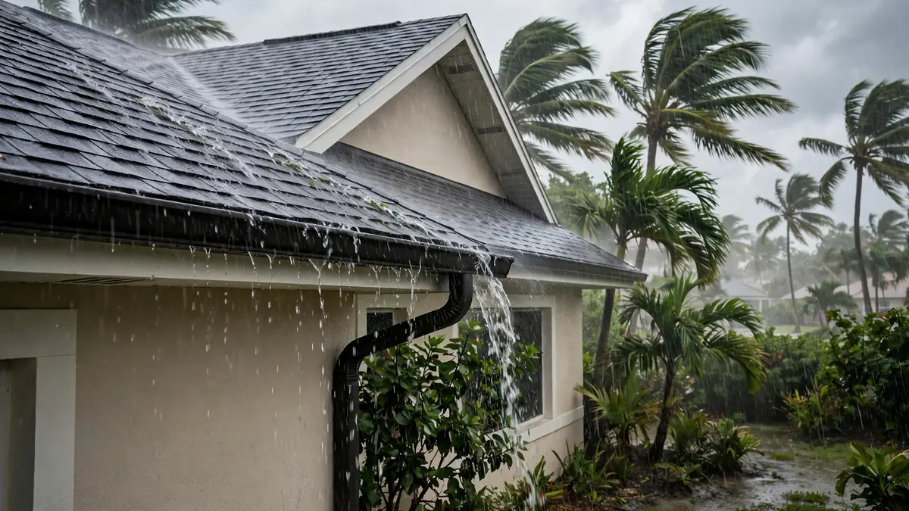
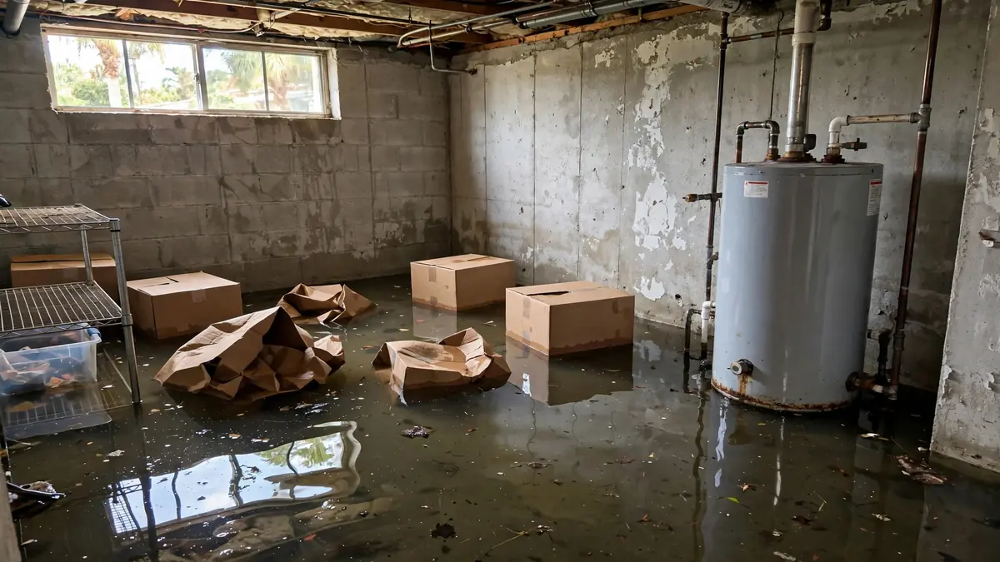
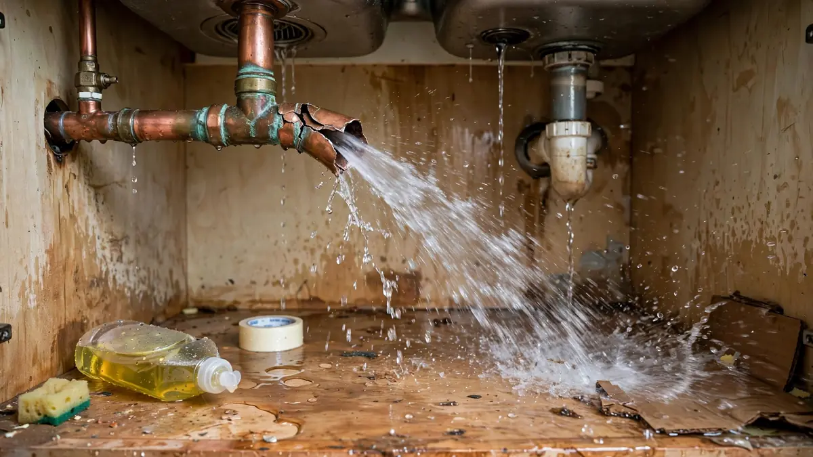
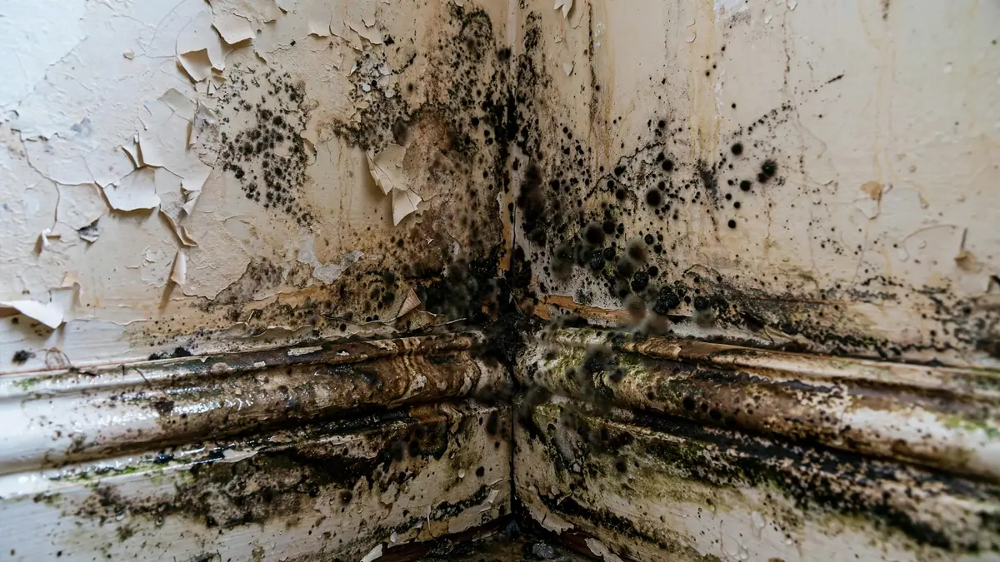
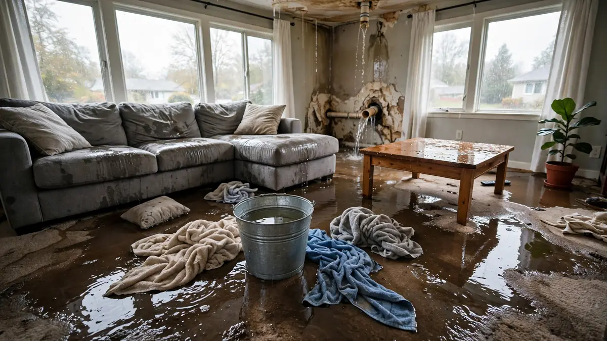

Water Damage Resources & Guides
Practical information for homeowners in Hollywood, FL.

How Much Does Water Damage Cost in Hollywood, FL?
2026-10-16 · 8 min · Guides
2026 price ranges, cost factors, and how to avoid overpaying.
Read more →
Why Structural Drying Matters More Than Just Removing Water
2026-10-08 · 5 min · Education
Hidden moisture can lead to long-term issues if not properly dried.
Read more →
How to Choose a Water Damage Company in Hollywood, FL
2026-10-08 · 6 min · Guides
What to look for: response time, documentation, and communication.
Read more →
Roof Leaks During Hollywood’s Rainy Season
2026-10-07 · 6 min · Prevention
How to spot early signs and respond when water appears inside.
Read more →
Sewage Backup Safety: Why Category 3 Needs Special Care
2026-10-06 · 5 min · Safety
Black water requires professional containment and disposal.
Read more →
Basement Flood Cleanup Tips for Hollywood Homes
2026-10-05 · 6 min · Guides
Practical advice on extraction, drying, and prevention.
Read more →
Does Homeowners Insurance Cover Water Damage in Florida?
2026-10-03 · 6 min · Insurance
Most sudden water damage is covered; flood usually is not.
Read more →
Burst Pipe in Hollywood? Here’s Exactly What to Do
2026-10-01 · 5 min · Emergency
Clear steps to limit damage while help is on the way.
Read more →
How Fast Does Mold Grow After Water Damage in Florida?
2026-09-25 · 5 min · Mold
In South Florida humidity, mold can begin within 24–48 hours.
Read more →
Category 1, 2, and 3 Water Damage Explained
2026-09-20 · 7 min · Education
Understand clean, gray, and black water and why the category matters.
Read more →
What to Do After Water Damage in Your Hollywood Home
2026-09-15 · 6 min · Guides
Practical step-by-step guide for homeowners when water damage strikes.
Read more →Loading guides...